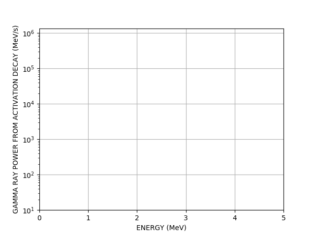

Getting started with FISPACT-II
Thomas Stainer
23rd November 2020
Useful links

Nuclear data: in depth compare
Reaction data for Silver
[tom@mac:~/exercises/basic/inventory]$ $FISPACT collapse
[tom@mac:~/exercises/basic/inventory]$ $FISPACT condense
[tom@mac:~/exercises/basic/inventory]$ $FISPACT input1
[tom@mac:~/exercises/basic/inventory]$ $FISPACT input2

<< Overwrite any existing output file >>
CLOBBER
<< we also want a JSON output file >>
JSON
<< read in COLLAPX file>>
GETXS 0
<< read in ARRAYX file>>
GETDECAY 0
<< end of control section >>
FISPACT
* FNS 5 Minutes Inconel-600
<< Inconel 600 with density of 8.42 g/cc >>
DENSITY 8.42
<< 1 gram with 4 elements >>
MASS 1.0E-3 4
<< 75.82% Ni >>
NI 75.82
<< 15.97% Cr >>
CR 15.97
<< 7.82% Fe >>
FE 7.82
<< 0.39% Mn >>
MN 0.39<< ignore nuclides with inventory < 1000 atoms >>
MIND 1E3
<< create gnuplot data and file >>
GRAPH 1 2 1 3
<< pathways analysis >>
UNCERTAINTY 2
<< output half lives >>
HALF
<< output ingestion and inhalation >>
HAZARDS<< irradiate material at 1.116e10 n/cm2/s >>
FLUX 1.116E+10
<< initial inventory (t=0) >>
ATOMS
<< want output after 5 minutes irradiation >>
TIME 5.0 MINS
<< solves rate equation matrix and >>
<< outputs initial inventory at time=5 mins>>
ATOMS
Note: Without either ATOMS, STEP, or SPECTRUM, nothing will be calculated! For less verbose output, use STEP, instead of ATOMS.
<< turn flux off - decay only >>
FLUX 0.
<< tells FISPACT-II we are cooling >>
ZERO
<< cooling time intervals >>
<< 38 seconds after irradiation ended >>
TIME 36 ATOMS
<< 15 seconds after previous time >>
TIME 15 ATOMS
<< 16 seconds after previous time >>
TIME 16 ATOMS
...
<< end of input file >>
END
* ENDNote: Times are intervals. It is time difference not cumulative time
Pypact
Can make parsing legacy FISPACT-II files easy - python3 package
